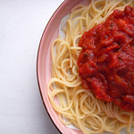

Spaghetti

Description
This is a classic dish of spaghetti with a little bit of pasta sauce. You will need a pot to boil the noodles.
You will also need a colander to drain. Feel free to substitue traditional spaghetti sauce with preferred.
Ingredients
- 12 oz Box of spaghetti
- 20 oz Traditional pasta sauce
Directions
- Fill pot about 3/4 way with water, or enough to completely cover pasta
- Turn heat up to high and bring to a boil
- Break spaghetti in half over the water and place pasta inside
- Boil the spaghetti for 7-8 mins or until properly tender and cooked
- Drain excess water into colander, then pour spaghetti back into pot
- Add the traditional pasta suace and mix until preferred consistency
Note: Add your favorite spices or garnishment for extra flavor!
Home